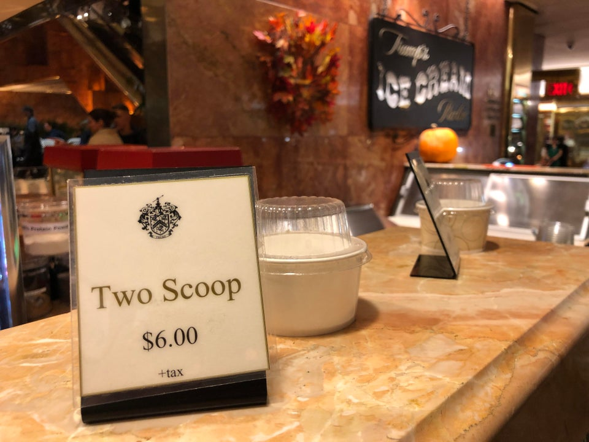

<!DOCTYPE html>
<html lang="en" dir="ltr">
  <head>
    <meta charset="utf-8">
    <title>The Triumphantly Towering Trump Tower</title>
  </head>
  <body>
  </body>
</html>
<hr>
<h1 align='center'>The Stunning Trump Tower</h1>
<hr><br>


<br><br><hr>
<h2 align='center'>Trump Tower</h2>
<p><b>Trump Tower</b> is a 58-floor, 664-foot-tall (202 m) mixed-use skyscraper at 721–725 Fifth Avenue, between 56th and 57th Streets, in Midtown Manhattan, New York City.It is famous because of its affliation with the Trump family, notably our current 45th president Donald Drump. It serves as the headquarters for the entirety of the Trump Organization, serving to them one of many places where they live/lived, or have resided.
<br><br><br>
<h3>Places to visit at your stay at Trump Tower</h3>
<a href='trumpicecreamparlor.html' target='_blank'>
</a>
<figcaption>Trump's ICE CREAM Parlor</figcaption>
<p>Located in the Atrium of NYC’s iconic Trump Tower on Fifth Avenue, Trump’s Ice Cream Parlor offers over 24 flavors of ice cream and sorbet each day. Just like the classic ice cream parlors of old, Trump’s Ice Cream Parlor had all of the classic favorites from thick shakes and banana splits to root beer floats and over the top sundaes. Also try our delicious hand-made crepes, fresh juices, fruit smoothies and low-fat frozen yogurt.</p>
<br><br>
<a href="trumpgrill.html" target='_blank'>
</a>
<figcaption>Trumps Grill Steakhouse</figcaption>
<p>Nestled in the corner of the Atrium in Midtown NYC’s world renowned Trump Tower, the Trump Grill restaurant offers classic American cuisine in an elegant and relaxed setting. Executive Chef Kamila Singh’s menu accommodates the “pressed for time” business person, as well as the casual diner in search of the ultimate New York experience. Our specialties include prime steaks, fresh seafood and salads, unique seasonal pastas and classic sandwiches.</p>

<br><hr>
<h3>Upcoming Events</h3>
<ul>
  <li><a href="trumpicecreamparlor.html" target="_blank ">Trump's ICE CREAM Parlor</a></li>
  <li><a href="trumpgrill.html" target="_blank">Trumps Grill Steakhouse</a></li>
</ul>
<br><hr><br>
<h3>Breaking News</h3>
<dl>
<dt><b>THE NEW YORK TIMES REPORT</b><dt>
<br>
<dd>New Yorkers have been finding more and more ways to protest President Trump, from stripping his name off buildings he once built to holding demonstrations outside his Midtown Manhattan home/office.

The latest effort: an online petition signed by more than 290,000 people seeks to officially rename one block of Fifth Avenue — where, you guessed it, Trump Tower is located — as President Barack H. Obama Avenue...The local community board has a longstanding moratorium against renaming streets.

The councilman who represents the area said he opposed the petition.</dd>
</dl>
<br><hr><br>
<h3>How much does the Icecream Cost?</h3>
<table border='2' bgcolor='lightgreen'>
 <tr>
   <th width='200'>OPTIONS</th><th width='100'>PRICE</th></tr>
   <tr><th width='200'>1 Scoop</th><th width='100'>$4.00</th></tr>
   <tr><th width='200'>2 Scoops</th><th width='100'>$6.00</th></tr>
   <tr><th width='200'>3 Scoops</th><th width='100'>$7.00</th></tr>
   <tr><th width='200'>Toppings</th><th width='100'>$1.00</th></tr>
   <tr><th width='200'>Sugar Cone</th><th width='100'>$1.00</th></tr>
   <tr><th width='200'>Waffle Cone</th><th width='100'>$1.50</th></tr>
   <tr><th width='200'>Milk Shake</th><th width='100'>$7.00</th></tr>
   <tr><th width='200'>Banana Split</th><th width='100'>$8.50</th></tr>
   <tr><th width='200'>Extra Flavor</th><th width='100'>$1.50</th></tr>
</table>
<br>
<h3>How much does the Breakfast meals cost?<h3>
<table border='2' bgcolor='lightblue' align='middle'>
  <tr>
   <th width='200'>Brunch Menu</th><th width='100'>PRICE</th>
   <tr><th width='200'>American Breakfast</th><th width='100'>$1.00</th></tr>
   <tr><th width='200'>French Omelette</th><th width='100'>$1.50</th></tr>
   <tr><th width='200'>Eggs Benedict</th><th width='100'>$7.00</th></tr>
   <tr><th width='200'>Smoke Salmon Plate</th><th width='100'>$8.50</th></tr>
   <tr><th width='200'>Croissant French toast</th><th width='100'>$1.50</th></tr>
 </table>
<br><hr>
<h3> Contact Us</h3>
<br>
<a href="https://www.trumptowerny.com" target="_blank">1-800-999-9999</a>
<p>Email to: <a href='https://www.trumptowerny.com' target='_blank'>Trump Tower NY</a></p>
<p>Find us here: <a href='https://www.trumptowerny.com' target='_blank'>TTNY</a></p>
<hr><br>
<nav align ='center'>
  <a href="index.html" target='_blank'>Index |</a>
  <a href="trumpicecreamparlor.html" target='_blank'>Trump Icecream |</a>
  <a href="trumpgrill.html" target='_blank' >Trump Grill</a>
</nav>
<br>
<figcaption align='center'> 2019@ Project 1 by Amauryn Hernandez</figcaption>
